Wer intensiv mit einem Dateimanager mit zwei Panels wie Double Commander arbeitet, kommt irgendwann an den Punkt, an dem es nützlicher ist, die Anwendung, die wir verwenden, direkt aus unserem Dateimanager zu starten, statt eine Verknüpfung auf dem Desktop, in einer Taskleiste oder in einem Startmenü aufzusuchen.
Das gilt besonders für Aufgaben, die wir oft erledigen.
Die Werkzeugleiste soll es jedem ermöglichen, Schaltflächen in einer Leiste für Funktionen anzupassen, die wir oft benötigen.
Double Commander bietet außerdem zahlreiche mögliche Parameter an, die auf den aktuell angezeigten oder ausgewählten Dateien beruhen, damit wir sie der zu startenden Anwendung als Parameter übergeben können.
Es folgt die Standard-Werkzeugleiste von DC, die nach einer Standardinstallation über den Dateipanels angezeigt wird. Keine Sorge: Sie können sie so einrichten, wie es Ihren Anforderungen und Ihrem Geschmack entspricht.
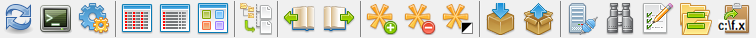
Es gibt außerdem die mittlere Werkzeugleiste, sie liegt zwischen den Dateipanels. Die Möglichkeiten und der Ablauf der Konfiguration der mittleren Werkzeugleiste entsprechen denen der Hauptwerkzeugleiste.
Ob die Werkzeugleiste angezeigt wird, hängt davon ab, was in den Konfigurationseinstellungen Layout festgelegt ist.
Zum Aktivieren stellen wir lediglich sicher, dass wir die Option Werkzeugleiste anzeigen gesetzt haben.
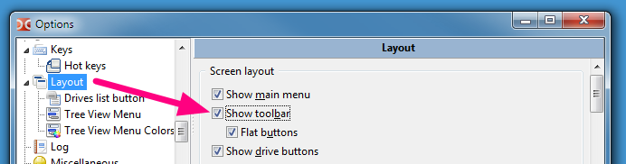
Hier ist eine Tabelle dessen, was eine Werkzeugleiste enthalten kann.
| Mögliche Elemente in einer Werkzeugleiste | |
|---|---|
| Elemente | Beschreibung |
| Senkrechter Strich, der uns hilft, ähnliche Funktionen und/oder einen ähnlichen Zusammenhang zu gruppieren. | |
| Ruft einen internen Befehl von Double Commander auf. | |
| Startet eine externe Anwendung, eine Programmdatei, ein Skript und Ähnliches. | |
| Konfiguriert weitere Elemente der Werkzeugleiste, die als Aufklappmenü der Hauptwerkzeugleiste angezeigt werden. | |
Um festzulegen, was in unserer Werkzeugleiste vorhanden sein soll, müssen wir sie konfigurieren.
Wir können selbstverständlich zur Hauptkonfiguration von Double Commander gehen, in der linken Spalte blättern und „Werkzeugleiste“ auswählen, dann haben wir Zugriff darauf.
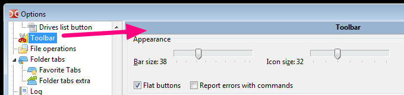
Der andere schnelle Weg zur Konfiguration ist ein Rechtsklick in einen leeren Bereich der Werkzeugleiste und die Auswahl von Bearbeiten.
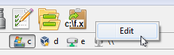
Wenn wir uns mit der Werkzeugleiste vertraut machen, klicken wir wahrscheinlich auch direkt mit der rechten Maustaste auf eine Schaltfläche der Werkzeugleiste, um nicht nur den Editor der Werkzeugleiste zu öffnen, sondern sofort die zugehörige Aktion der Schaltfläche zu bearbeiten, auf die wir mit der rechten Maustaste geklickt haben.
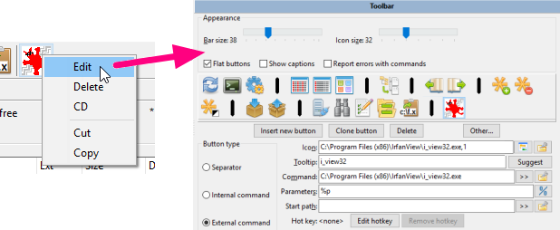
Außerdem ermöglicht das Kontextmenü, die ausgewählte Schaltfläche zu löschen, sie in die Zwischenablage auszuschneiden oder zu kopieren oder eine Schaltfläche aus der Zwischenablage einzufügen.
Wir können die Reihenfolge der Werkzeugleistenelemente auch ändern, ohne das Einstellungsfenster zu öffnen: Double Commander unterstützt das Ziehen von Schaltflächen mit der Maus bei gedrückter Taste Shift.
Das Trennzeichen hat keine eigentliche Funktion, es dient nur der übersichtlichen Gestaltung. Es kann Schaltflächengruppen trennen, damit zusammengehörige Aktionen beieinanderstehen.
Die folgenden Stile sind verfügbar:
Trennzeichen – ist einfach ein senkrechter Strich (waagerecht in der mittleren Werkzeugleiste).
Leerraum – fügt einen leeren Zwischenraum ein, dessen Breite der Größe der Schaltfläche entspricht.
Zeilenumbruch – alle folgenden Schaltflächen stehen in einer neuen Zeile der Werkzeugleiste.
Das Menü verwendet immer das erste, unabhängig vom gewählten Stil.
Im folgenden Beispiel wurden Trennzeichen verwendet, um Funktionen zum Vergleichen zusammenzufassen, danach die zur Zwischenablage und so weiter.
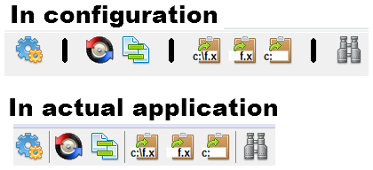
Die internen Befehle betreffen Aktionen, die Double Commander selbst ausführt und für die keine externe Anwendung aufgerufen werden muss.
Die Befehle sind sehr vielfältig. Siehe diese Seite, auf der alle internen Befehle beschrieben sind.
Wenn wir zum Beispiel eine Schaltfläche der Werkzeugleiste zum Starten einer Suche möchten, wählen wir einfach den Befehl cm_Search aus der Auswahlliste der Befehle.
Wie wir im folgenden Bild sehen, können wir ein eigenes Symbol dafür wählen. In der Regel genügt es jedoch, den Befehl aus der Auswahlliste zu wählen, und der Befehl hat bereits ein zugehöriges internes Symbol.
Die Kurzinfo ist ebenfalls vorhanden, damit wir wenige leicht zu merkende Wörter eintragen können, die uns an die Aufgabe der Schaltfläche erinnern, wenn wir den Mauszeiger darüber bewegen.
Hier ist ein Beispiel mit dem Befehl cm_Search:
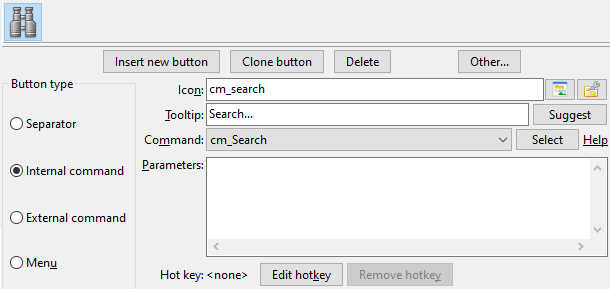
Manche internen Befehle akzeptieren Parameter, um ihre Aktionen zu konfigurieren. Wenn das nötig ist, schreiben wir den Parameter einfach in das Parameterfeld: Die meisten Parameter müssen als parameter=value angegeben werden (sofern nichts anderes genannt ist), jeder in einer eigenen Zeile, ohne Anführungszeichen und ohne andere Arten, Sonderzeichen und Leerzeichen zu maskieren.
Im folgenden Beispiel verwenden wir den internen Befehl cm_ChangeDir und geben zwei Parameter an, die festlegen, welches Verzeichnis in jedem Panel geladen und angezeigt werden soll.
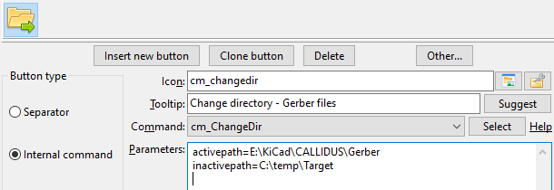
Die externen Befehle betreffen Aktionen, für die ein externes Programm aufgerufen werden muss.
Für die externen Befehle können wir einige weitere Einstellungen vornehmen, mit denen wir genau festlegen, welchen Befehl wir starten möchten, in welchem Verzeichnis wir ihn starten möchten und welche Parameter wir dem Befehl bei Bedarf übergeben möchten.
Das Feld „Befehl“ ist nur für die Programmdatei bestimmt (so wie sie ist, ohne Anführungszeichen): Wir können den Dateinamen oder den Dateinamen mit dem vollständigen Pfad angeben, wir können auch Umgebungsvariablen verwenden.
Bei den Parametern können wir Benutzervariablen wählen, die anhand der aktuell ausgewählten Datei des aktiven Panels und so weiter durch ihren tatsächlichen Wert ersetzt werden. Die Seite der möglichen Variablen, die als Parameter verwendet werden können, steht unter diesem Link (zu beachten ist die Verwendung von Anführungszeichen). Um einen Befehl im Terminal auszuführen, können wir die Variablen %t0 und %t1 verwenden.
Im folgenden Beispiel haben wir eine Schaltfläche der Werkzeugleiste eingerichtet, die die Anwendung GIMP startet. %p als Parameter bedeutet, dass beim Klick auf die Schaltfläche zum Starten von GIMP der vollständige Dateiname der aktuell ausgewählten Datei im aktiven Panel als Parameter übergeben wird, denn genau dafür steht %p.
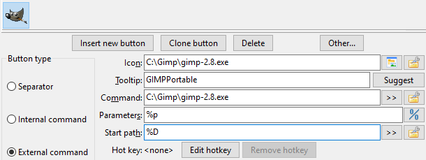
Wenn wir das Arbeitsverzeichnis nicht ausdrücklich angeben müssen, können wir das Feld „Startpfad“ leer lassen. In diesem Fall ist das Arbeitsverzeichnis das aktuelle Verzeichnis des aktiven Dateipanels. Hier können wir die Variable %D, %d oder Umgebungsvariablen verwenden.
Wenn wir viele Schaltflächen der Werkzeugleiste konfigurieren, kann uns der Platz ausgehen, um alle unsere Schaltflächen in derselben waagerechten Zeile unterzubringen.
Damit wir weitere Schaltflächen hinzufügen können, können wir einen besonderen Schaltflächentyp hinzufügen, der unter der Schaltfläche ein Aufklappmenü erscheinen lässt und uns Zugang zu etwas Ähnlichem wie einer Werkzeugleiste aus Schaltflächen verschafft, dargestellt als Aufklappmenü.
Siehe das folgende Beispiel, in dem wir einen Schaltflächentyp „Menü“ hinzugefügt haben.
Dadurch erscheint darunter eine neue Unterwerkzeugleiste, die wir nach Bedarf mit neuen Schaltflächen für verschiedene Aufgaben füllen können.
Dieses Beispiel zeigt uns auch, dass es helfen kann, Schaltflächen zu gruppieren, die zu denselben Projekten und denselben Bereichen gehören.
In diesem Beispiel enthält die Unterwerkzeugleiste Funktionen zu verschiedenen Arten von Betriebssystemen, die in virtuellen Maschinen installiert sind.
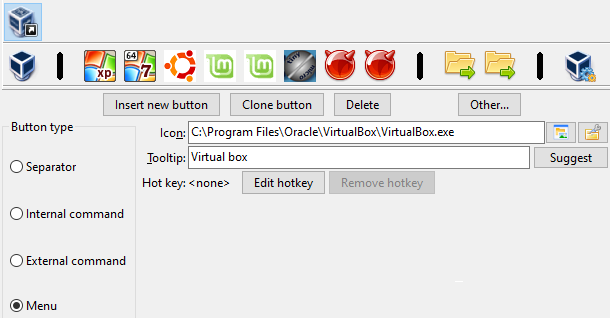
Unten ist dargestellt, wie die konfigurierte Unterwerkzeugleiste in der Anwendung erscheint:
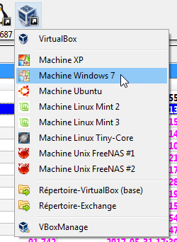
Die so konfigurierte Unterwerkzeugleiste kann dieselben Schaltflächentypen enthalten, die zuvor vorgestellt wurden.
Wir können sogar eine Unterwerkzeugleiste innerhalb einer Unterwerkzeugleiste haben und so weiter.
In der Anwendung wird das einfach als Untermenü eines Menüelements angezeigt.
Unten steht ein Beispiel:
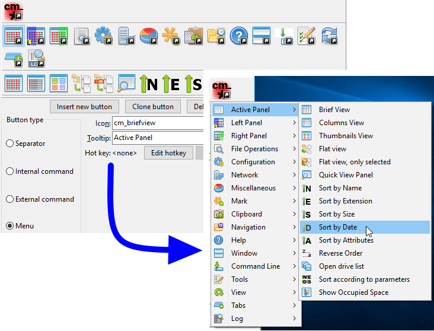